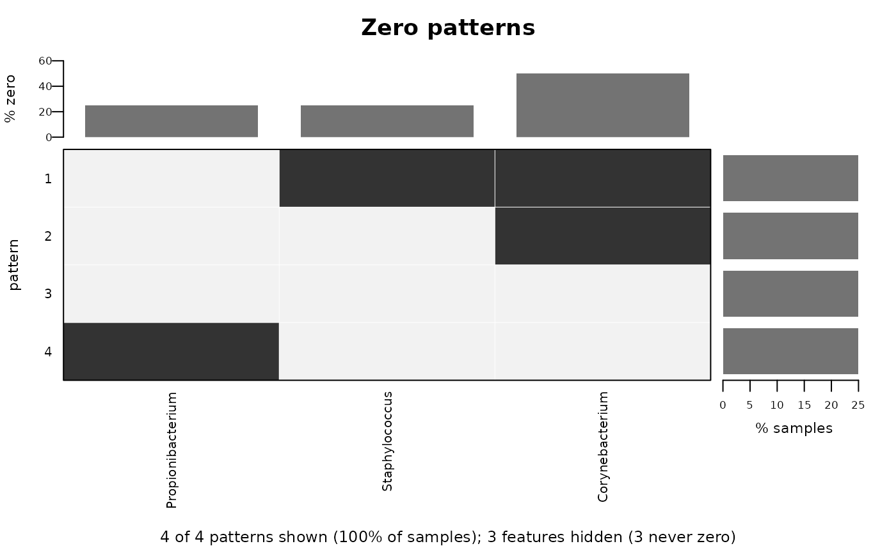

Which combinations of zero features occur among the samples, how often
each occurs, and how often each feature is zero: a look at the zeros
before choosing a pseudocount or a replace_zeros() method.
Value
An integer vector with one value per sample, its pattern's id,
named by the samples, of class ecodive_zero_pattern. Pattern 1 is
the most frequent; patterns as frequent as each other are numbered by
their first sample. Attributes:
patterns: a logical matrix, patterns \(\times\) features,TRUEwhere the feature is zero, with the ids as row names;n_samples: the number of samples with each pattern;zeros: each feature's proportion of samples where it is zero, named;n,D: the numbers of samples and features.
print() summarizes it, and plot() draws the patterns (see
plot.ecodive_zero_pattern()).
Details
A sample's pattern is the set of features that are zero in it. Two samples share a pattern only when exactly the same features are zero in both. Sparse tables are read without being made dense.
Reading it. Zeros come from two sources:
Count zeros, features present but not sampled at the depth sequenced, are scattered: many patterns, each in few samples, with the rarest features zero most often. These are what
replace_zeros()and pseudocounts are for.Structural zeros, features truly absent from some samples, come in blocks: a few frequent patterns where whole groups of features are zero together, often in the samples of one group. Replacing them invents abundances; test them as absent with
structural_zeros()instead, or analyse the groups separately.
Microbiome tables are sparse enough that nearly every sample has a pattern of its own. The patterns are then little use, but the features' proportions of zeros (the top bars of the plot) still show which features are rare, and filtering those out first leaves fewer zeros to replace.
The patterns matrix has one row per pattern, so when every sample has
its own it is as large as the table, as a dense logical matrix.
zCompositions' zPatterns() (Palarea-Albaladejo & Martín-Fernández
2015) finds the same patterns and counts; its numbering of them isn't
documented, and may differ.
Input Types
The counts parameter is designed to accept a simple numeric matrix, but
seamlessly supports objects from the following biological data packages:
phyloseqrbiomSummarizedExperimentTreeSummarizedExperiment
For large datasets, standard matrix operations may be slow. See
vignette('performance') for details on using optimized formats
(e.g. sparse matrices) and parallel processing.
References
Palarea-Albaladejo, J., & Martín-Fernández, J. A. (2015). zCompositions — R package for multivariate imputation of left-censored data under a compositional approach. Chemometrics and Intelligent Laboratory Systems, 143, 85–96. doi:10.1016/j.chemolab.2015.02.019
Examples
zp <- zero_pattern(ex_counts)
zp
#> # 4 zero patterns among 4 samples and 6 features
#> # 3 features never zero, 0 always zero
#> # most frequent pattern (1): 1 sample, zeros in 'Corynebacterium', 'Staphylococcus'
# The patterns, TRUE where a feature is zero
attr(zp, 'patterns')[1:3, 1:5]
#> Streptococcus Bacteroides Corynebacterium Haemophilus Propionibacterium
#> 1 FALSE FALSE TRUE FALSE FALSE
#> 2 FALSE FALSE TRUE FALSE FALSE
#> 3 FALSE FALSE FALSE FALSE FALSE
plot(zp)
